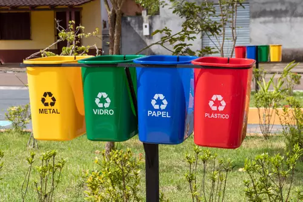
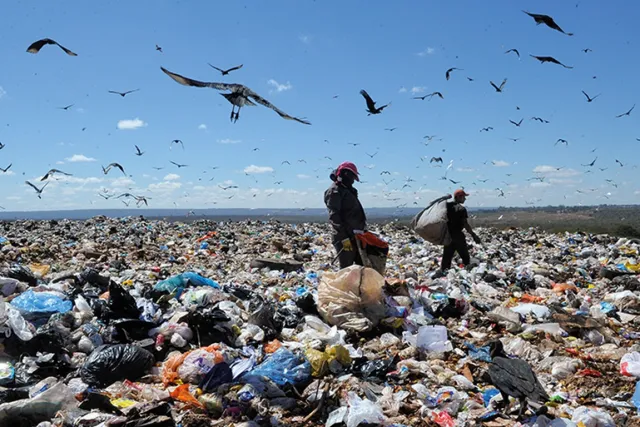
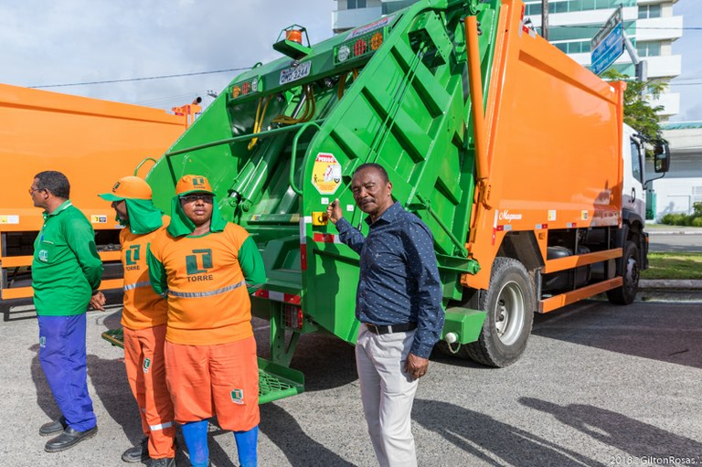

Oi, pessoal! Hoje consegui finalmente começar minha composteira em casa. Alguém aqui já tentou?
Que legal, Ana! Eu também fiz uma no ano passado. No começo fiquei meio perdido, mas depois que peguei o jeito foi tranquilo. Agora quase não jogo restos de comida fora.
Nossa, estou querendo muito fazer uma, mas moro em apartamento pequeno. Vocês acham que dá certo mesmo em pouco espaço?
Dá sim, Juliana. Eu moro em kitnet e uso uma composteira com baldes empilhados. Não ocupa muito espaço e não dá cheiro se cuidar direitinho.
Exato! Eu comprei um modelo pequeno, e até agora está funcionando bem. É só evitar colocar restos de carne e gordura.
Esse blog tem muitas informações boas sobre sustentabilidade, natureza e notícias sobre nossa cidade.
Essa foi uma conversa de demonstração, feita por Pedro Costa
Link da implementação do chat: https://github.com/hagmir7/chat-box/blob/main/index.html
Notícias Recentes

COLETA DE LIXO SUSTENTÁVEL EM ARACAJU
MELHORES TÉCNICAS DE RECICLAGEM
COMO OS LIXÕES IMPACTAM A SOCIEDADE
VEREADOR ACOMPANHA ENTREGA DE NOVOS CAMINHÕES DE LIXO EM ARACAJU